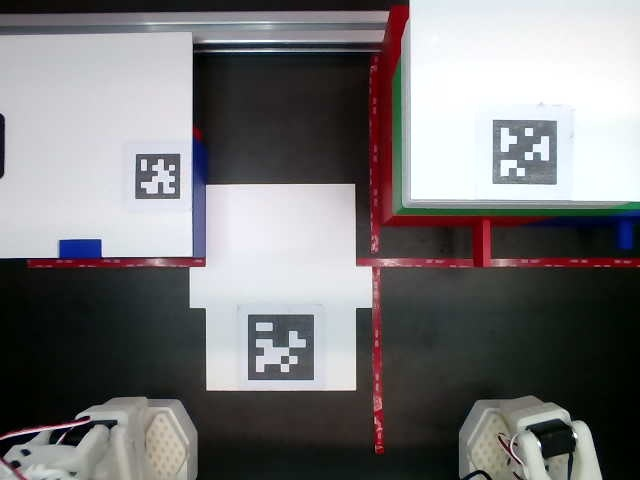
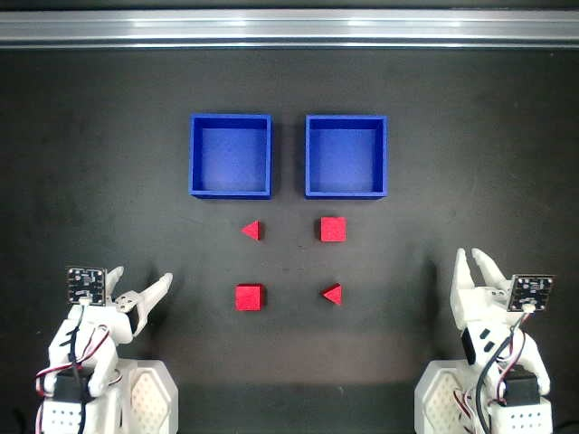
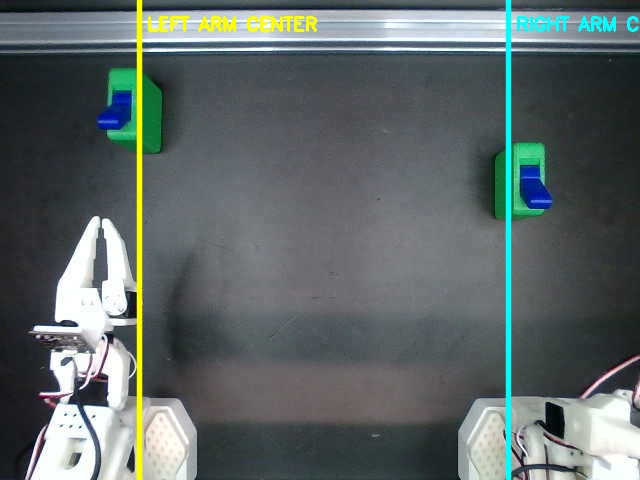
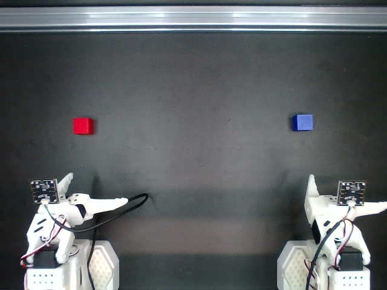
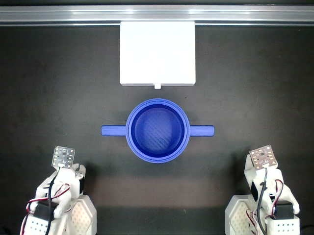

BREE: A Reproducible and Scalable Real-World Benchmark for Low-Cost Bimanual Robot Learning



Reproducibility is an experimental result—not a setup claim.
Real-world VLA evaluation is difficult to compare across laboratories because small changes in camera pose, illumination, robot calibration and task objects alter the observation and action distributions. BREE treats the physical environment as part of the benchmark specification. Each node is assembled from a standardized rack, controlled lighting and versioned printable objects, then admitted through quantitative arm and camera checks. This enables a stronger research question: whether data collected at independent sites can be pooled for training and whether the resulting policy transfers back across those sites without re-engineering the evaluation environment.
Benchmark tasks
Every task defines objects, initial-state variants, language instruction, episode budget and a measurable success criterion.


Benchmark results
Results report both task performance and cross-node variation; all entries are tied to a frozen protocol and inspectable evidence.
| Rank | Method | Training set | Mean success ↑ | Cross-node σ ↓ | Trials | Release |
|---|---|---|---|---|---|---|
| 1 | ACT, mixed-site | BREE-Pooled-148 | 71.0 | 2.4 | 120 | Verified |
| 2 | SmolVLA, single-site | BREE-Node01-100 | 64.0 | 6.8 | 120 | Verified |
Table 1. Illustrative layout only. Final metrics, confidence intervals and track definitions will follow the frozen benchmark protocol.